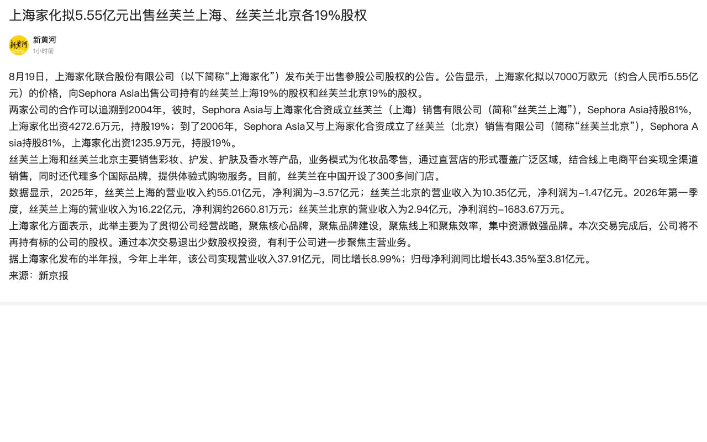
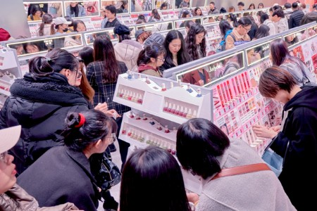

S国内头部企业同步调整资产、渠道与产能，增长质量开始约束资源配置
8 月 20 日，上海家化公告拟以 7,000 万欧元向 Sephora Asia 出售所持丝芙兰上海、丝芙兰北京各 19% 股权，交易尚需股东会审议及后续程序完成。公告将交易目的表述为聚焦核心品牌、品牌建设、线上和效率；公司同日披露的 2026 年半年报显示，上半年营收 37.91 亿元、归母净利润 3.81 亿元。上海家化出售参股公司股权公告｜上海家化半年报摘要
上美股份在 8 月 17 日发布盈利警告，预计 2026 年上半年收入为 37.18 亿至 37.59 亿元、利润为 1.2 亿至 1.3 亿元，利润同比降幅约 76.6% 至 78.4%，公司将压力归因于韩束销售下滑以及人力、研发与品牌投入。8 月 21 日，其 SCC 印尼工厂在肯德尔经济特区奠基，一期规划日产能 50 万瓶、计划于 2027 年 7 月投产。上美股份盈利警告披露索引｜盈利警告数据复核｜印尼工厂奠基与产能计划｜本地化供应链投入复核
巨子生物 8 月 18 日披露中期业绩：上半年收入 29.18 亿元、归母净利润 9.40 亿元，分别同比下降 6.3% 和 20.5%；公告相关报道将业绩压力与专业皮肤护理业务的销售结构调整相联系。巨子生物中期业绩｜中期业绩数据复核
信号判断：三家公司的动作指向同一管理问题：增长放缓时，渠道权益投资、核心品牌投入、产品结构优化和海外产能建设不能各自独立推进。上海家化将非核心参股资产变现，上美在利润承压期仍将供应链前置到东南亚，巨子生物则以渠道和产品结构调整换取长期经营质量。对竞对而言，跟踪重点应放在品牌投放效率、核心渠道依赖度、产能利用率及资产处置后的资金投向能否形成闭环。

